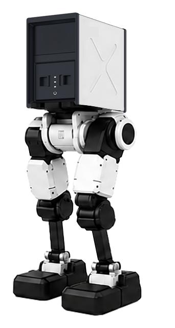
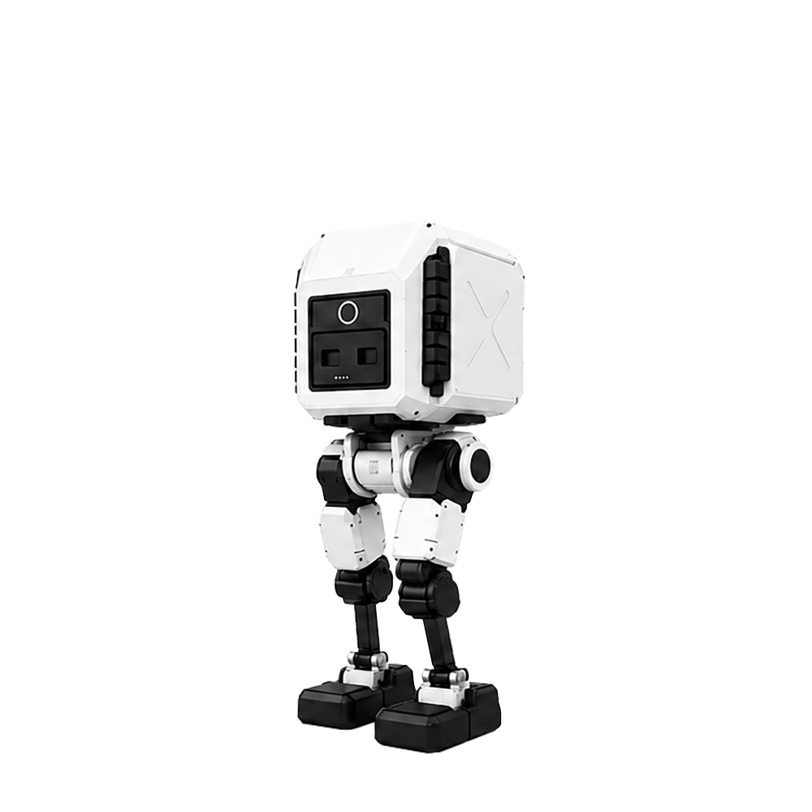

기획 방향
노션 기획안 기준으로 eP는 2족 보행 로봇 Pi를 베이스로 하며, 외장과 추가 센서 모듈을 환경에 맞게 탈부착할 수 있도록 커스텀하는 방향입니다. 단순 로봇 판매가 아니라 현장 경험과 콘텐츠 노출까지 연결되는 상품으로 정리했습니다.
Ludbot · Custom Robot Marketing
2족 보행 로봇 eP를 교육 행사, 팝업 체험, 미디어 콘텐츠에 맞춰 제안할 수 있도록 상품 구조와 홍보 메시지, 영상 제작 방향을 정리했습니다.

Autonomous Mini Humanoid Robot
상품 메시지, 활용처, 콘텐츠 흐름 정리
공간과 목적에 맞춘 커스텀 로봇 제안
Context
노션 기획안 기준으로 eP는 2족 보행 로봇 Pi를 베이스로 하며, 외장과 추가 센서 모듈을 환경에 맞게 탈부착할 수 있도록 커스텀하는 방향입니다. 단순 로봇 판매가 아니라 현장 경험과 콘텐츠 노출까지 연결되는 상품으로 정리했습니다.
Ludbot 사이트는 로봇의 기능과 활용 가치를 보여주는 공식 홍보 채널입니다. 기존 Geekble 포트폴리오와 커스텀 로봇 제작 경험을 신뢰 근거로 삼고, 로봇 체험 행사와 납품 의뢰를 만들기 위한 영업 창구로 설계됐습니다.
Product Snapshot
짧은 체험 세션, 전시 타임테이블, 촬영 컷 단위 운영에 맞춰 설명하기 좋은 사용 시간입니다.
이동, 설치, 운용 동선을 고려해 팝업과 교육 행사에 제안 가능한 미니 휴머노이드 포맷입니다.
외장, 소품, 센서, 간단한 연출 장치를 더해 목적별 로봇 캐릭터로 확장할 수 있습니다.
What I Built Around It
제품 스펙만 나열하면 로봇은 비싸고 어려운 장비처럼 보입니다. eP가 어떤 공간에서 어떤 문제를 해결하고, 어떤 장면을 만들 수 있는지 바로 상상되도록 마케팅 패키지와 영상 소재의 방향을 잡았습니다.
Offer Structure
Ludbot의 공개 메시지처럼 1대 단위 주문 제작과 공간 맞춤 기능 개발을 전면에 둡니다. 팝업 스토어, 과학관, 방송 세트처럼 목적이 다른 현장마다 외장, 동작, 센서, 인터랙션을 다르게 구성할 수 있게 설명합니다.
단순히 로봇을 납품하는 데서 끝내지 않고, 로봇이 실제로 사람을 멈춰 세우는 장면을 콘텐츠로 남기는 흐름까지 제안합니다. 제품 소개, 현장 스케치, 숏폼, 납품 사례를 묶어 다음 영업으로 이어지는 자료로 전환합니다.

Robot · Custom · Marketing · Video